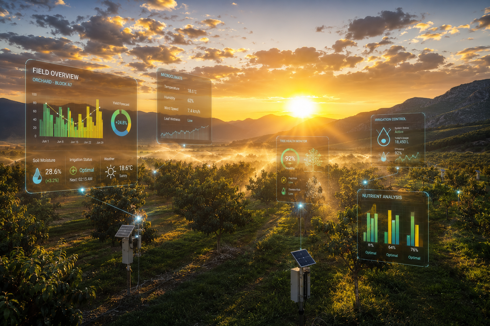
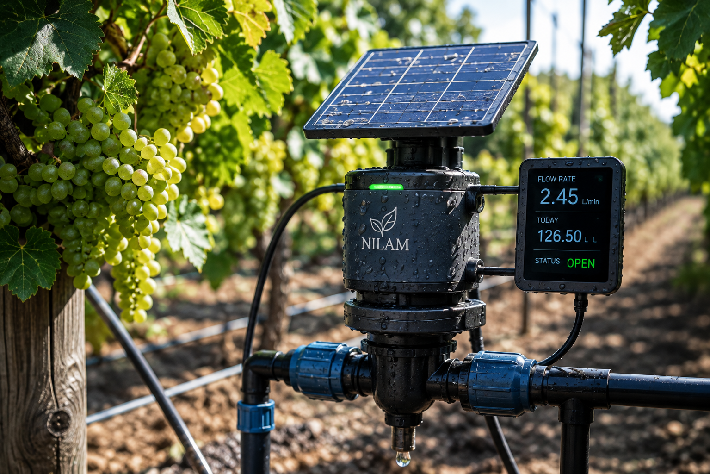
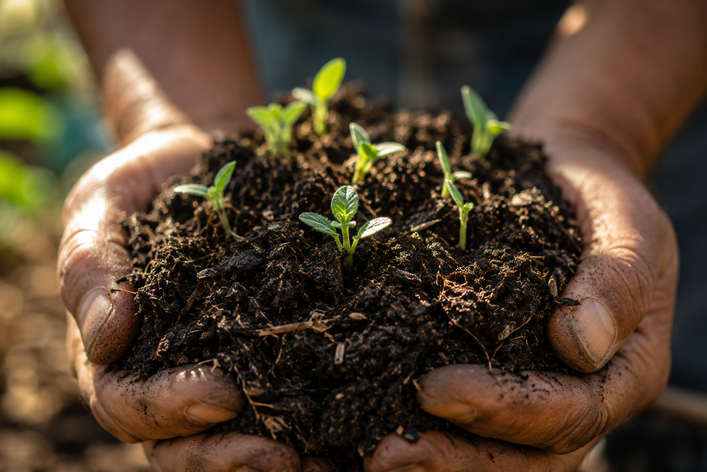
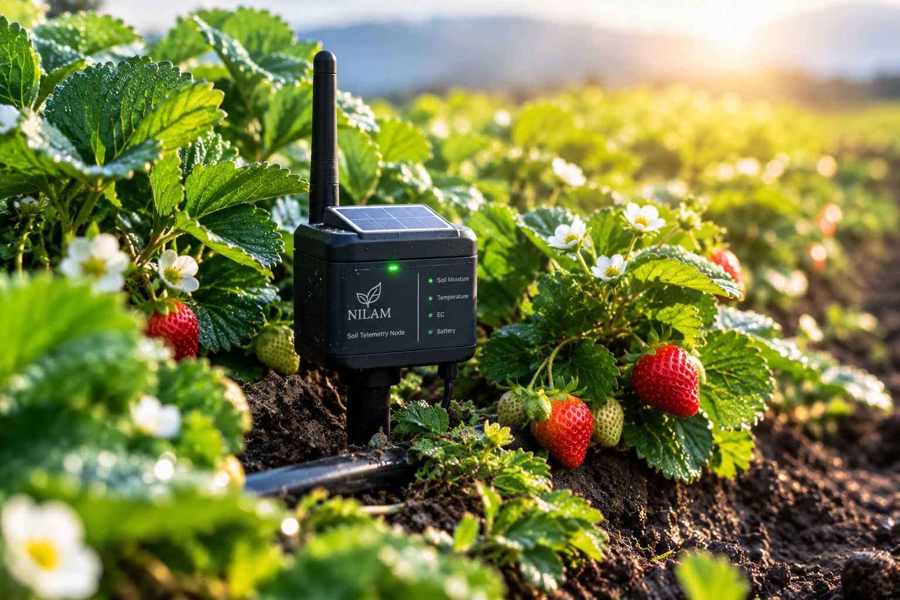
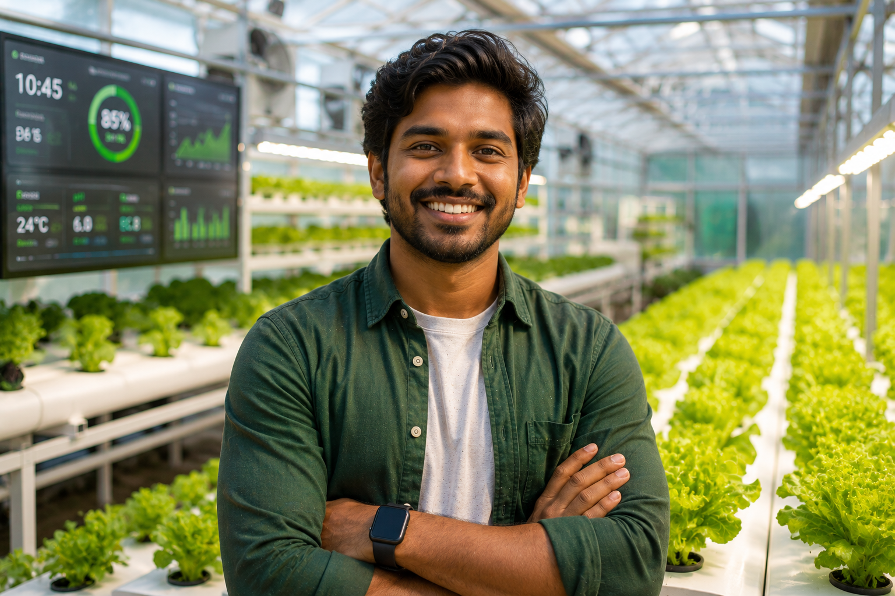
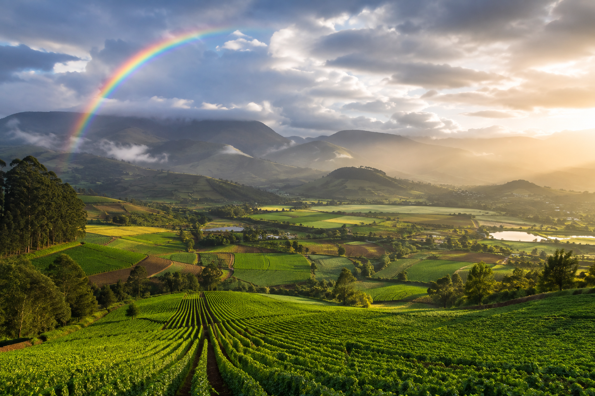
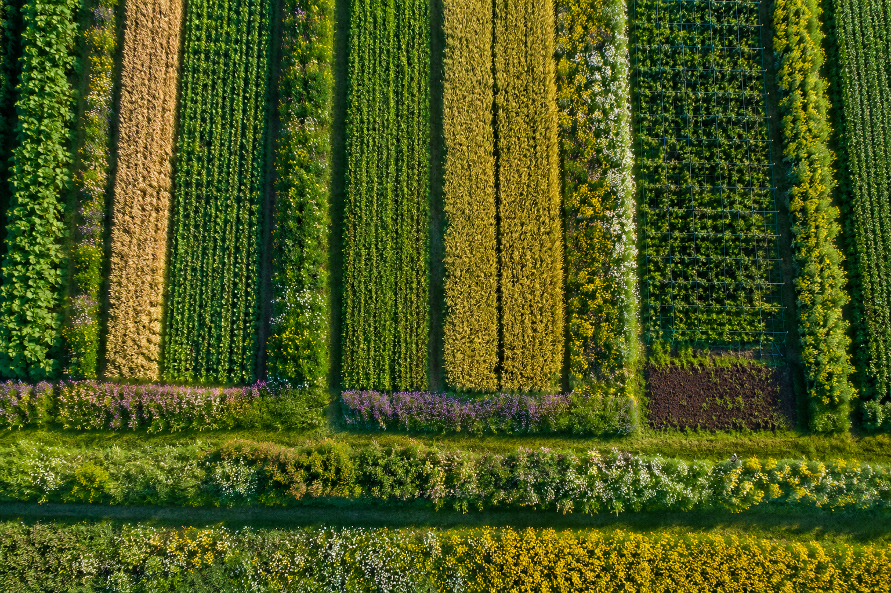

The Future of Precision Agriculture
How data-driven decision making is moving from large commercial operations to family farms, and what it means for global food security.
Read Full ArticleExpert analysis, industry trends, and practical guides on how technology is changing the way we farm.

How data-driven decision making is moving from large commercial operations to family farms, and what it means for global food security.
Read Full Article
With water scarcity becoming a reality in many regions, smart irrigation systems are no longer a luxury, but a necessity.
Read More
How continuous soil monitoring can help you reduce fertilizer use while actually increasing your crop yields.
Read More
A technical dive into the hardware that powers the modern connected farm and how it survives extreme conditions.
Read More
Overcoming the learning curve and embracing software as just another essential farm implement.
Read More
Why regional forecasts are failing farmers and how hyper-local microclimate data is solving the problem.
Read More
How data analytics are proving that ecological sustainability and economic profitability can go hand in hand.
Read MoreSelect a season to view optimal planting, fertilization, irrigation, and harvest windows for primary crops.
Soil Temp: > 10°C | Target Moisture: 32% - 36%
Apply 40kg/ha N-boost at tillering stage.
Verify rhizobia inoculation for optimal N-fixation.
Monitor early frost warnings via hyper-local sensors.